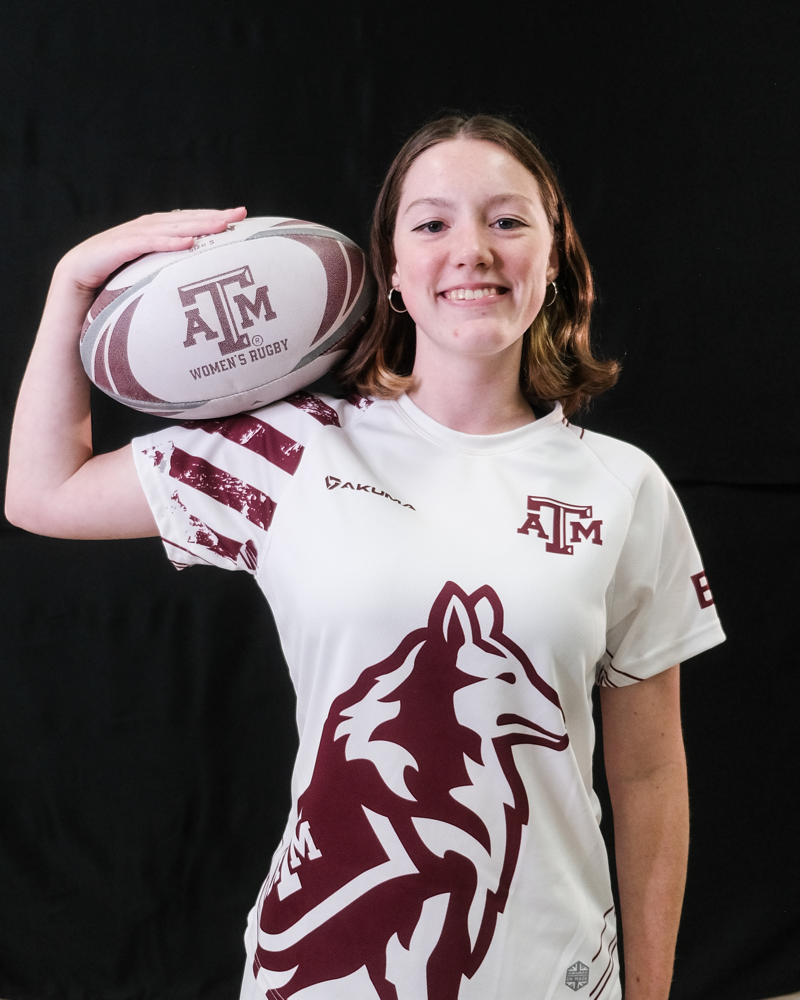
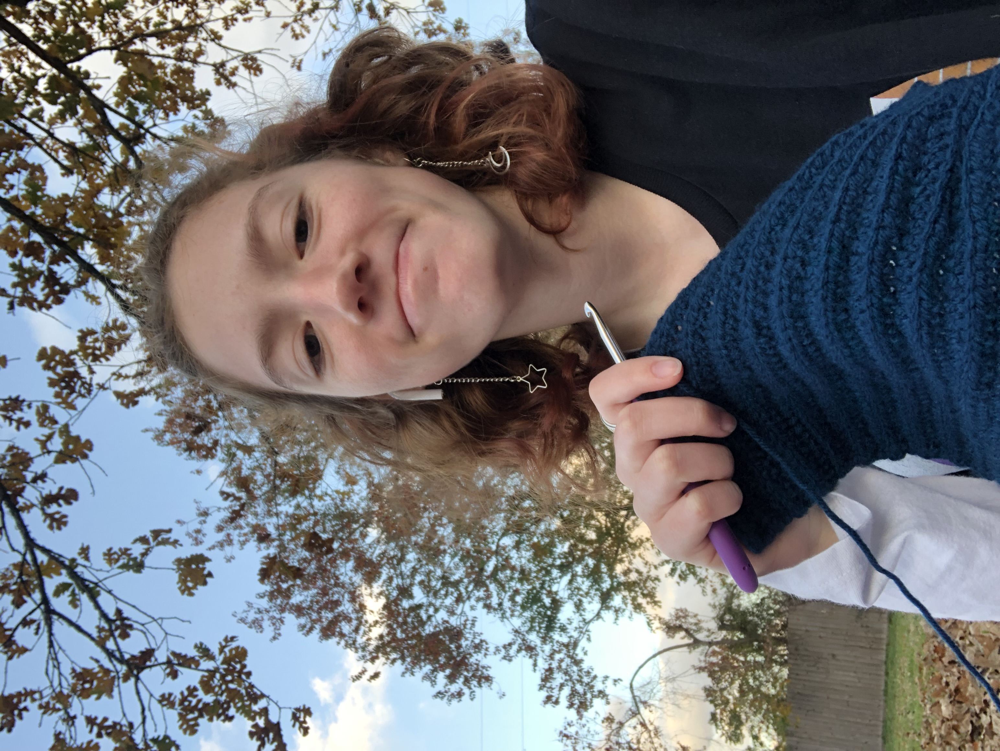
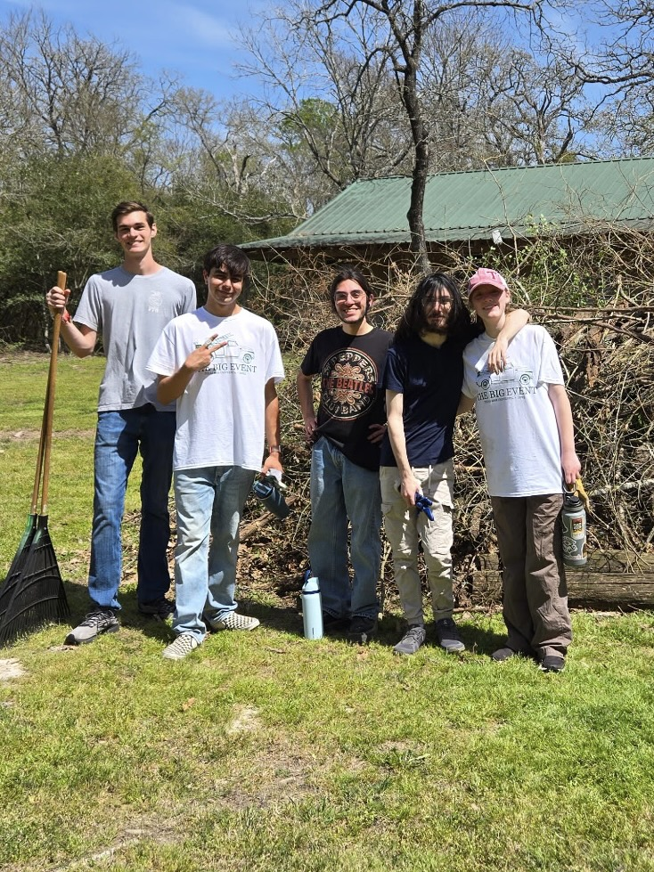

I am a member of the Texas A&M Women's Rugby team. I have been playing since 2024,
and have recently become the Tournament & Equipment Officer. I love the challenge of
the contact sport and the camaraderie of my team. This sport has taught me the value of
teamwork, dedication, and leadership. I absolutely love this sport and the friends I have made through it!
TAMU Women's Rugby

I crochet in my free time, and I have even started a small business on Etsy to sell my projects. I love this hobby, as it gives me a way to relax while being creative and detail oriented. I like being able to create things that are functional and beautiful, and to be able to turn my ideas into a tangible item.

I have done several volunteering activities in the past few years.
In 2025, I participated in Big Event, which is the largest one-day student volunteer event nationally.
In the summer of 2023, I went on a mission trip to Honduras where I helped hand out food to impoverished areas
as a part of the Hope 4 Honduras charity organization. I appreciated being able to help people in need,
and it gave me a better understanding of the importance of community service.
Big Event